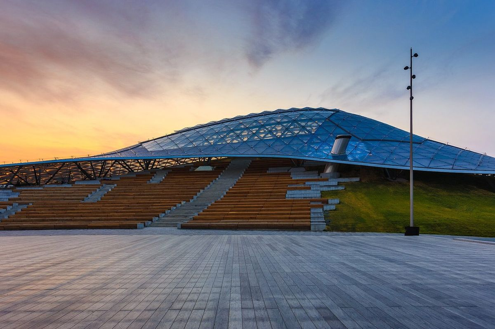

День 04 · понедельник, 9 ноября
Пешком через центр
Понедельник не повод сидеть в отеле: идём из Петровки к реке ногами, заглядывая во всё, что понравится.

Фото: DmitriyGuryanov, CC BY-SA 4.0
- Гостиница
- Сафмар Аврора Люкс
- Выходим из Сафмар Аврора Люкс пешком: Петровка, Камергерский переулок, МХТ
- Театральная площадь и Большой театр, потом Никольская и Красная площадь. Если замёрзнем — ГУМ, там тепло и есть кофе
- Парк «Зарядье» и парящий мост — Кремль и Москворецкая набережная с высоты
- Вниз по набережной: Болотная, Музеон, Крымский мост — и к причалу
- Парк Горького или кафе у воды — до посадки ещё есть время
Вечер
Яхта «Дегустационный сет» — Флотилия Radisson: ужин, который едет вместе с нами
💡 Маршрут
От отеля до причала за Крымским мостом — около семи километров и три-четыре часа неспешным шагом: с кофе, фотографиями и остановками. Если нагуляемся раньше, от «Зарядья» до причала можно доехать на такси. Не забываем про самокаты, велосипеды и большое шумное метро.
Куда по дороге забежать
- Камергерский переулок — МХТ и витрины, три минуты от отеля.
- Никольская улица — пешеходная и самая нарядная в центре.
- ГУМ — тёплый пассаж, если ударит мороз (а вдруг!).
- Парк «Зарядье» и парящий мост — один из лучших видов на Кремль и реку.
- Болотная набережная и Музеон — воздух, скульптуры, Москва-река слева.
- Крымский мост и причал «Парк Горького 1» — здесь маршрут заканчивается. В сам парк можно и не заходить: он огромный и никуда не денется, сюда стоит вернуться отдельно.
⚠️ Ноябрь
Темнеет около пяти. Светлое время отдаём набережной и парку, вечер — яхте.